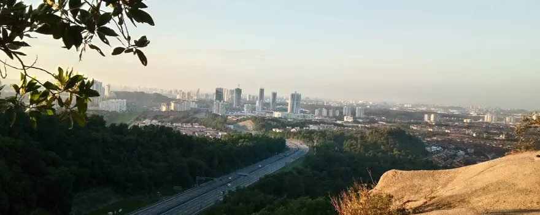
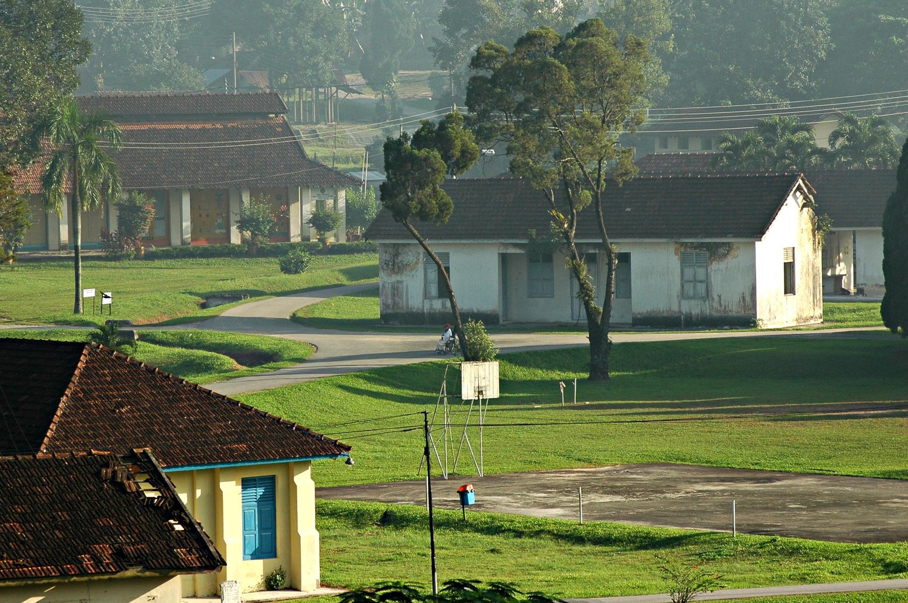

1 / 3

2 / 3

3 / 3

Sungai Buloh’s cultural heritage plays a significant role in shaping its community values. The town is home to various ethnic groups, including Malays, Chinese, and Indians, each bringing their own customs and traditions. This cultural diversity fosters a sense of unity and understanding among the residents, which in turn promotes tolerance and respect for one another’s beliefs and practices.
The people of Sungai Buloh hold deep respect for their traditional customs and heritage. This reverence for tradition is evident in the preservation of cultural practices, rituals, and historical landmarks within the town. Residents actively participate in upholding age-old traditions through celebrations, storytelling, and the passing down of ancestral knowledge from one generation to the next. The community’s commitment to honoring its heritage plays a significant role in shaping the town’s identity and fostering a strong sense of belonging among its inhabitants.
One of the most notable cultural landmarks in Sungai Buloh is the Sungai Buloh Chinese Cemetery, which dates back to the 19th century. This historical site is a testament to the town’s multicultural past and serves as a reminder of the shared history among its residents.
Sungai Buloh’s community values also extend to environmental conservation. The Sungai Buloh Wetland Reserve, a protected area in the heart of the town, is a prime example of how residents take pride in preserving their natural surroundings. This reserve is home to a diverse array of flora and fauna, making it an essential site for both wildlife and visitors.
The residents of Sungai Buloh take pride in their ability to come together as a community, regardless of cultural or religious differences. This spirit of unity is often demonstrated through various communal activities, such as festivals, neighborhood gatherings, and collaborative efforts to address local issues. The town’s diverse population has fostered an environment where different ethnic groups coexist peacefully, contributing to the overall sense of harmony within the community.
The reserve’s establishment in 1992 has been instrumental in raising awareness among the local community about the importance of environmental preservation. Residents actively participate in various conservation initiatives, such as tree planting, waste management, and wildlife monitoring.
Education is highly valued in Sungai Buloh, and the community places great emphasis on knowledge sharing. The town boasts several schools and educational institutions, providing ample opportunities for residents to access quality education.
Furthermore, community members often engage in knowledge-sharing activities, such as workshops, seminars, and cultural exchange programs. These events foster a sense of camaraderie and promote the exchange of ideas and experiences, which in turn strengthens the community’s bond and enriches its cultural heritage.
Sungai Buloh’s community values also extend to supporting local businesses. Residents are encouraged to patronize local shops and restaurants, which in turn helps maintain the town’s economic stability and promotes the growth of small businesses.
Residents demonstrate compassion and empathy towards one another, offering assistance during times of need and celebrating each other’s successes. This culture of support extends beyond individual relationships to encompass collective initiatives aimed at improving the well-being of the entire community. Whether through volunteer work, charitable endeavors, or mutual aid networks, the people of Sungai Buloh prioritize looking out for one another and working together for the greater good.
By doing so, the community also nurtures a sense of pride and ownership in their town, as well as fostering a strong sense of interconnectedness among its residents.
The community values in Sungai Buloh also include a strong commitment to preserving the natural environment. As a town surrounded by lush greenery and scenic landscapes, residents hold a deep appreciation for the local flora and fauna. Efforts to protect the environment are reflected in conservation projects, eco-friendly practices, and educational campaigns focused on sustainability. The collective dedication to safeguarding the natural beauty of Sungai Buloh underscores the community’s shared responsibility towards environmental stewardship.
2023. Sungai Buloh. All rights reversed